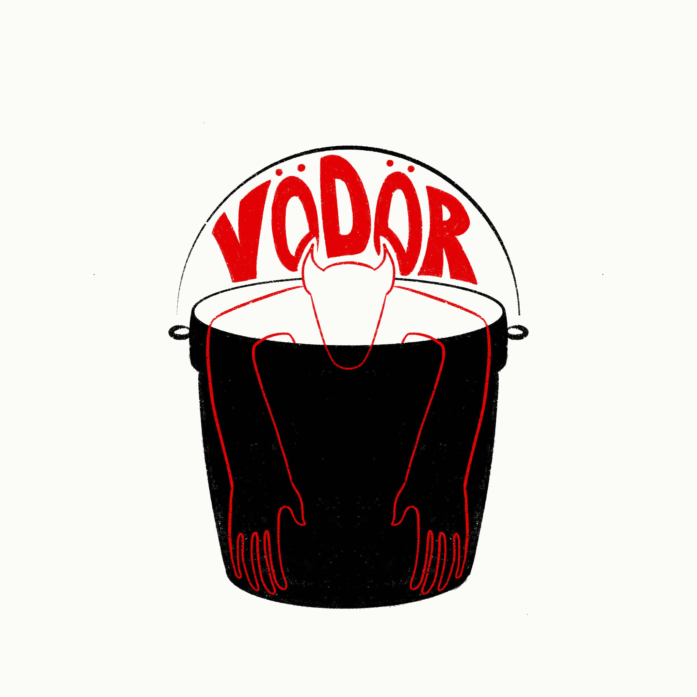

Megálmodtunk egy fürdőt. Egy fiatalos, vibráns, és menő fürdőházat, ahol aktívan kapcsolódhatsz ki reggel/délben/este, csak úgy, mint a kedvenc budapesti romkocsmádban.

A Vödörben sajnos még nincs víz. De ne aggódj, már feltöltés alatt áll, úgyhogy hamarosan tényleg bele tudsz majd csobbanni!
görgess lejjebbVÖDÖR. Mobil szauna és fürdőkert, egy konténerben.